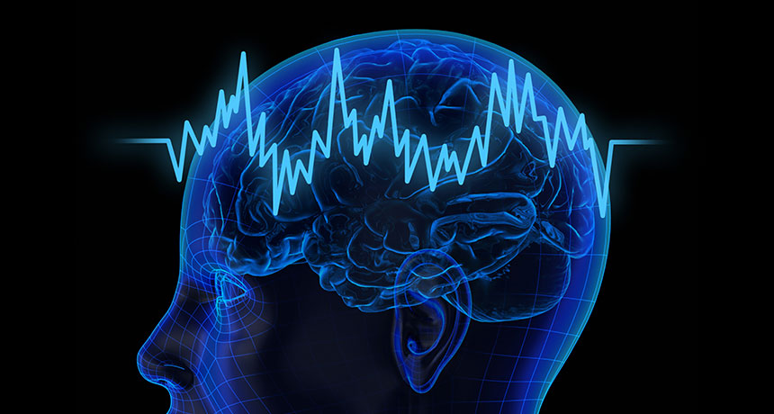

Neuralink's upcoming Human trials - Should we be worried?

Buried amongst Musk's ventures to build electric cars, launch various objects into space and colonise Mars, is his neurotechnology company Neuralink. The business, now worth $5 billion according to Reuters, has recently recieved approval from the FDA to commence human clinical trials. This long awaited decision has come after the same application was declined twice previously.
This is not the first time Neuralink has hit the headlines this year, with Reuters running an article last December with disgruntled neuralink employees accusing the company of animal mistreatment. The article explains how Musk's eagerness to recieve human trials approval put extra pressure on workers and cost the lives of laboratory animals and best research practice.
So what is Neuralink's product that Musk is so keen to get to market? Brain Computer Interfaces (BCIs) are devices that interact with someone's nervous system. This can involve collecting, reading and interpreting brain signals. For example, BCIs exist to assist those with paralysis, allowing them to control a cursor on a screen using their thoughts. This works by using a cap to detect electrical signals in the brain, before putting them through an algorithm. The user will have some way of matching thoughts to controls. For example, they could visualise their right arm moving up, producing a recognisable signal pattern that is then picked up and translated by the BCI to move the cursor up on the screen.
With over 100 billion neurons in the brain, the possibilities presented by reading brain waves are impressive. For example, by interepting the neural path between the eyes and the brain: the optic nerve, we are able to use algorithms to recreate a rough picture of what the eyes are seeing. While this has not been demonstrated in Humans, a paper published in the 1990s built a convincing digital image of a cat's vision using only 7 electrodes. One does not have to be a science fiction writer to imagine how this technology could be used if intoduced safely to Humans.
Another element of BCIs is certain devices ability to "write" or input electrical signals to the nervous system. By electrically stimulating specific parts of the brain, theoretically we will be able to insert information, knowledge or memories using BCI technology. The groundwork has already been laid with Cochlear implants, a now fairly common treatment for deafness. A cochlear implant records audio from a microphone attached to an earpiece. Any detected speech from the audio is then translated into electrical signals, which are then applied to the cochlear nerve via an implant. The cochlear nerve's normal function is to transport audio information from the ear to the brain in electrical signal form, but with a cochlear implant this pathway is intercepted, allowing speech to be interpreted by the brain.

Neuralink's product is a BCI that can read AND write brain signals. The device has more threads (connections to read/write signals) than any other on the market, and is supposedly constructed out of flexible material that will be more easily targeted at specific brain regions. This flexible, bidirectional ability to read and write brain signals could theoretically open the door to amazing possibilities. Think telepathy, digitisation of memories, matrix-style skill learning and other science fiction tropes. This is certainly what Musk envisions. On multiple occasions he has spoken of "mergin humans with AI" and curing basically every mental or neurological condition he can think of. Neuralink's website talks of "unlocking human potential" and "expanding how we experience the world".
These claims and ideas are worrying in multiple ways. Firstly, a future with such technology and integration of technology into the mind does not come without questions about autonomy, privacy and fairness. These questions have not gone unnoticed either, with Chile introducing "neurorights" into their constitution. The ability to interpret memories or intentions from a device in someones brain is an obvious ethical nightmare, and memory/consciousness digitisation pops up in many a dystopian sci-fi film. However, these uses are far in the future. While it is very easy to imagine how these technolgies could go wrong, it is also very hard to imagine how and why they would be approved for use in Humans. This brings us to the second worry. Musk's and his companies claims are in danger of inspiring too much awe and confidence in their technology. For proper informed consent to be acquired from participants in trials, they must have reasonable exectations of the technology they are trialling. Whilst it appears Neuralink is appealing for participants with conditions that will be helped by current use BCIs, healthy participants and those of future trials, as well as the wider scientific community, must be wary of bombastic claims undermining the essential ethical framework of informed consent that allow clinical trials to produce safe and reliable medicines and treatments.